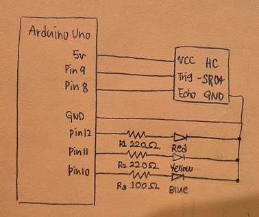
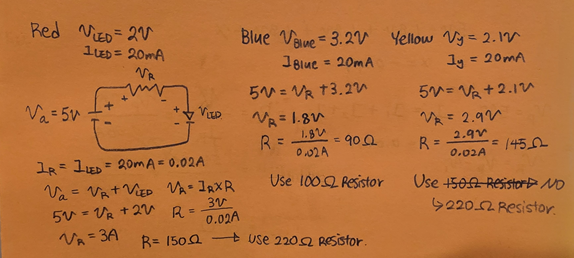
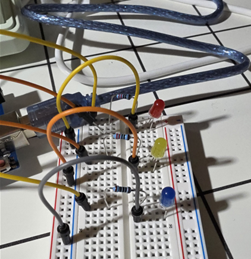
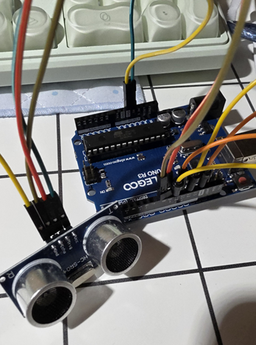
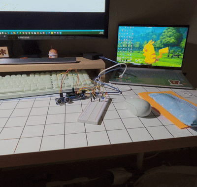
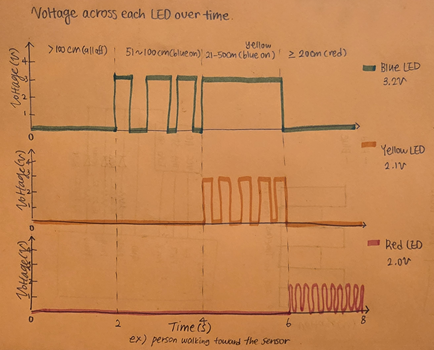

HCDE 439 - Physical Computing | Bomyung Lee | 10.10.26
An Interactive Warning Light Inspired by Emergency Vehicles
For this assignment, I designed an interactive warning light system inspired by the flashing emergency lights of police cars and fire trucks.
What interested me most about emergency vehicle lights was how their colors and blinking patterns can immediately communicate a sense of warning and urgency. Rather than simply making LEDs blink repeatedly, I wanted to explore how these visual signals could respond to a person's movement.
To achieve this, I combined three LED Lights (blue, yellow, and red) with an Arduino Uno and an HC-SR04 ultrasonic distance sensor.
Instead of following a fixed blinking sequence, the system detects how close a person or object is and changes its blinking patterns accordingly.
As someone approaches the sensor, the system transitions through three warning stages.
| Distance | LED Behavior | Warning Level |
|---|---|---|
| More than 100 cm or no echo | All LEDs OFF | No warning |
| 51-100 cm | Blue LED blinks slowly (500ms ON / 500ms OFF) | Initial alert |
| 21-50 cm | Blue LED stays ON while yellow LED blinks (100ms ON / 100ms OFF) | Caution |
| 20 cm or closer | Red LED blinks rapidly (40ms ON / 40ms OFF) | Urgent warning |
My goal was not simply to make three LEDs blink, but to explore how changes in color, rhythm, and blinking speed could communicate different levels of urgency.
Inspired by emergency vehicle warning lights, I designed the system so that the visual warning becomes more noticeable as someone approaches the sensor. The slow blue blinking acts as an initial alert. When someone gets closer, the blue LED stays on while the yellow LED begins blinking, creating a stronger visual warning. Finally, when someone gets very close to the sensor, both the blue and yellow LEDs turn off and the red LED begins blinking rapidly.
I wanted to explore how a simple electronic circuit could create a responsive visual communication system using sensor input.

I connected each LED to its own digital output pin so that the Arduino could control the LEDs independently.
The blue LED is connected to pin 10, the yellow LED to pin 11, and the red LED to pin 12. Each LED has its own resistor to limit the current. All three LED cathodes connect to a shared ground. The HC-SR04 ultrasonic sensor uses pin 9 for TRIG and pin 8 for ECHO. The LED branches share ground, but they are not all powered by the same digital output pin. This means that each pin only supplies the current for its own LED, allowing each LED to be controlled separately.
| Component | Arduino Pin | Resistor |
|---|---|---|
| Blue LED | 10 | 100 ohms |
| Yellow LED | 11 | 220 ohms |
| Red LED | 12 | 220 ohms |
| Ultrasonic Sensor TRIG | 9 | N/A |
| Ultrasonic Sensor ECHO | 8 | N/A |
| Ultrasonic Sensor VCC | 5V | N/A |
| Ground | GND | N/A |
Before building the circuit, I calculated the appropriate resistance for each LED to limit the current flowing through it.
I used a 5V output and a target current of 20mA (0.02A) for each LED. The forward voltages used in these calculations are approximate values for the different LED colors.
Since each LED and resistor are connected in series, the voltage from the Arduino is divided between the LED and its resistor.
Kirchhoff's Voltage Law:
5V = V(resistor) + V(LED)
Ohm's Law:
R = (V(source) - V(forward)) / I
Forward voltage: approximately 3.2V
Target current: 0.02A
R = (5 - 3.2) / 0.02
R = 90 ohms
I selected a 100-ohm resistor for the blue LED.
Forward voltage: approximately 2.1V
Target current: 0.02A
R = (5 - 2.1) / 0.02
R = 145 ohms
I originally planned to use a 150-ohm resistor, but I did not have one available. Instead, I used a 220-ohm resistor.
Since the resistance is higher, the current is lower than my initial target, which also reduces the LED's expected brightness.
Forward voltage: approximately 2.0V
Target current: 0.02A
R = (5 - 2.0) / 0.02
R = 150 ohms
I used a 220-ohm resistor for the red LED.
| LED | Calculated Resistance | Actual Resistor |
|---|---|---|
| Blue | 90 ohms | 100 ohms |
| Yellow | 145 ohms | 220 ohms |
| Red | 150 ohms | 220 ohms |

This process helped me understand the difference between calculating resistor values and actually building a circuit with the components available.
Although I initially calculated a value close to 150 ohms for the yellow LED, I had to adjust my choice during the building process. I learned that circuit design involves both theoretical calculations and practical decisions. Using a larger resistor allowed me to reduce the current while keeping the LED functional.
After completing the schematic and resistor calculations, I built the circuit on a breadboard. I used an Arduino Uno, three LEDs, individual resistors, jumper wires, a breadboard, and an HC-SR04 ultrasonic sensor.
The three LEDs are connected to individual digital output pins, while the ultrasonic sensor measures the distance between the circuit and nearby objects.


I programmed the Arduino to measure distance and select a warning pattern based on how close a person or object is to the sensor.
The program uses a sense-decide-blink process. First, the ultrasonic sensor measures distance. Next, the Arduino compares the measurement with the distance thresholds. Finally, the appropriate LED blinking pattern is activated.
// Assign pin 9 to the ultrasonic sensor trigger.
#define TRIG 9
// Assign pin 8 to the ultrasonic sensor echo.
#define ECHO 8
// Assign pin 10 to the blue LED.
const int pinTen = 10;
// Assign pin 11 to the yellow LED.
const int pinEleven = 11;
// Assign pin 12 to the red LED.
const int pinTwelve = 12;
// Initialize the Arduino.
void setup() {
// Start serial communication at 9600 baud.
Serial.begin(9600);
// Configure TRIG as an output.
pinMode(TRIG, OUTPUT);
// Configure ECHO as an input.
pinMode(ECHO, INPUT);
// Configure the blue LED as an output.
pinMode(pinTen, OUTPUT);
// Configure the yellow LED as an output.
pinMode(pinEleven, OUTPUT);
// Configure the red LED as an output.
pinMode(pinTwelve, OUTPUT);
}
// Measure distance using the ultrasonic sensor.
long calculateDistance() {
// Store the echo duration and calculated distance.
long duration, distance;
// Set the trigger pin LOW.
digitalWrite(TRIG, LOW);
// Wait two microseconds.
delayMicroseconds(2);
// Send a HIGH trigger pulse.
digitalWrite(TRIG, HIGH);
// Keep the trigger HIGH for ten microseconds.
delayMicroseconds(10);
// End the trigger pulse.
digitalWrite(TRIG, LOW);
// Measure how long the echo signal stays HIGH.
duration = pulseIn(ECHO, HIGH);
// Convert echo duration into centimeters.
distance = duration * 17 / 1000;
// Print the distance label.
Serial.print("Distance: ");
// Print the measured distance.
Serial.print(distance);
// Print the distance unit.
Serial.println(" cm");
// Return the calculated distance.
return distance;
}
// Blink an LED slowly.
void ledBlinkSlow(int i) {
// Turn the selected LED ON.
digitalWrite(i, HIGH);
// Wait 500 milliseconds.
delay(500);
// Turn the selected LED OFF.
digitalWrite(i, LOW);
// Wait 500 milliseconds.
delay(500);
}
// Blink an LED at medium speed.
void ledBlinkMid(int i) {
// Turn the selected LED ON.
digitalWrite(i, HIGH);
// Wait 100 milliseconds.
delay(100);
// Turn the selected LED OFF.
digitalWrite(i, LOW);
// Wait 100 milliseconds.
delay(100);
}
// Blink an LED rapidly.
void ledBlinkFast(int i) {
// Turn the selected LED ON.
digitalWrite(i, HIGH);
// Wait 40 milliseconds.
delay(40);
// Turn the selected LED OFF.
digitalWrite(i, LOW);
// Wait 40 milliseconds.
delay(40);
}
// Continuously control the warning system.
void loop() {
// Measure the distance.
long distance = calculateDistance();
// Check if the object is beyond 100cm or no echo exists.
if (distance > 100 || distance == 0) {
// Turn the blue LED OFF.
digitalWrite(pinTen, LOW);
// Turn the yellow LED OFF.
digitalWrite(pinEleven, LOW);
// Turn the red LED OFF.
digitalWrite(pinTwelve, LOW);
// Activate the initial warning stage.
} else if (distance > 50) {
// Turn the yellow LED OFF.
digitalWrite(pinEleven, LOW);
// Turn the red LED OFF.
digitalWrite(pinTwelve, LOW);
// Blink the blue LED slowly.
ledBlinkSlow(pinTen);
// Activate the caution stage.
} else if (distance > 20) {
// Turn the red LED OFF.
digitalWrite(pinTwelve, LOW);
// Keep the blue LED ON.
digitalWrite(pinTen, HIGH);
// Blink the yellow LED at medium speed.
ledBlinkMid(pinEleven);
// Activate the urgent warning stage.
} else {
// Turn the blue LED OFF.
digitalWrite(pinTen, LOW);
// Turn the yellow LED OFF.
digitalWrite(pinEleven, LOW);
// Blink the red LED rapidly.
ledBlinkFast(pinTwelve);
}
}
During the development process, I encountered several issues while testing the Arduino code and the physical circuit.
One of the first problems was that the ultrasonic sensor repeatedly returned a distance of 0cm. I discovered that I had not correctly configured the TRIG and ECHO pins using pinMode(). After fixing this, I was able to read distance measurements. I also had trouble with the blinking speeds. Initially, some of the warning stages blinked at very similar speeds, which made them difficult to distinguish. I adjusted the ON and OFF intervals and decided to keep the blue LED continuously illuminated during the yellow warning stage to make the difference clearer.
Another issue occurred when the sensor did not detect an echo. Since pulseIn() returns 0 when no echo is received, the program initially interpreted this as an object being extremely close. I fixed this by treating 0cm as no detected object and turning all the LEDs off. I also encountered some compile errors, including an incorrect use of Serial.print() and duplicate setup() and loop() definitions caused by having multiple sketch files in the same Arduino folder.
After understanding the causes of these errors, I corrected the code and tested the circuit again.
One of the most interesting problems I encountered was related to the blinking speed of the red LED.
I initially set the LED to blink for 10ms ON and 10ms OFF, which produces a frequency of 50Hz. However, at this speed, the red LED appeared almost continuously illuminated. The blinking was difficult for me to see. Since I wanted the red LED to communicate an urgent warning, I changed the timing to 40ms ON and 40ms OFF, or 12.5Hz. This slower blinking pattern was much easier to recognize and created a clearer warning. This experience taught me that the fastest blinking speed is not necessarily the most effective warning pattern.
In interaction design, it is important to consider not only what the system does, but also how people perceive its behavior.
The current code uses delay() to control the blinking speed of each LED. Although delay() makes the timing easier to program, it temporarily pauses the Arduino while the LED is blinking. As a result, the sensor cannot measure a new distance during the delay.
For example, during the slow blinking stage, the system may take up to approximately one second to react to a change in distance. In the future, I would like to explore using millis() instead of delay() so the Arduino can measure distance and control the LEDs without blocking the program.

When nobody is within 100cm of the sensor, all three LEDs remain off. As my hand moves closer, the blue LED starts blinking slowly. When the distance decreases further, the blue LED remains on while the yellow LED begins blinking.
Finally, at a distance of 20cm or less, the blue and yellow LEDs turn off and the red LED starts blinking rapidly. This demonstrates how the Arduino can use a sensor to control a changing LED pattern instead of repeating a fixed sequence.

The graph shows how the voltage across each LED changes over time as a person approaches the sensor. When an LED is on, the voltage across it is approximately equal to its forward voltage: 3.2V for blue, 2.1V for yellow, and 2.0V for red. When an LED is off, the voltage across it is approximately 0V. Since the blinking pattern depends on distance rather than time, the graph represents an example scenario.
From 0 to 2 seconds, nobody is near the sensor, so all LEDs remain off.
From 2 to 5 seconds, the person is between 51cm and 100cm away. The blue LED blinks with a one-second period.
From 5 to 8 seconds, the person moves into the 21-50cm zone. The blue LED remains on while the yellow LED blinks.
From 8 to 10 seconds, the person is within 20cm of the sensor, so the red LED blinks rapidly.
The Arduino Uno has 14 digital pins and 6 analog input pins that can also function as digital outputs. Therefore, it could theoretically control up to 20 LEDs independently if each LED used a separate pin.
However, pins 0 and 1 are typically reserved for serial communication, and my circuit uses pins 8 and 9 for the ultrasonic sensor. This leaves 16 pins available for independently controlled LEDs. The total current depends on the resistors and LEDs used.
If each LED draws around 10mA, the total current when all 16 LEDs are on would be:
16 x 10mA = 160mA
This calculation assumes that all 16 LEDs are illuminated simultaneously. I would still need to consider the Arduino microcontroller's individual pin and total current limits. If I wanted to control a larger number of LEDs, I could use higher-value resistors, reduce the number of LEDs illuminated at one time, or use external LED driver circuits.
During testing, I initially programmed the red LED to turn on for 10 milliseconds and off for 10 milliseconds. This created a complete blinking period of 20 milliseconds.
Frequency = 1 / period
Frequency = 1 / 0.02 seconds
Frequency = 50Hz
At this speed, the red LED appeared almost continuously illuminated to my eyes, making the blinking difficult to distinguish. I eventually changed the interval to 40ms ON and 40ms OFF. This creates a complete period of 80 milliseconds.
Frequency = 1 / 0.08 seconds
Frequency = 12.5Hz
At 12.5Hz, the blinking became much easier to recognize. Based on my observation, blinking at approximately 50Hz was too fast for me to clearly distinguish under my testing conditions. However, the speed at which flashing appears continuous can vary depending on the person, brightness, and viewing environment.
Yes. I used Claude as a learning and debugging assistant throughout this assignment. I also used ChatGPT to review the assignment requirements and organize my final documentation. I developed the overall concept, assembled the circuit, worked through the resistor calculations, and tested the LED patterns myself.
Specifically, I used AI in the following ways:
Using AI was helpful because it allowed me to better understand the concepts behind my circuit rather than simply following instructions. I found it especially useful when debugging my Arduino code, because it helped me understand why certain errors occurred and how different parts of the program affected the LEDs. However, I also learned that AI suggestions need to be tested and verified through actual implementation. For example, the fastest blinking pattern initially appeared almost continuously illuminated, even though the program was technically making the LED blink.
By building the circuit, calculating resistor values, and experimenting with different blinking speeds myself, I gained a better understanding of how hardware and software work together.